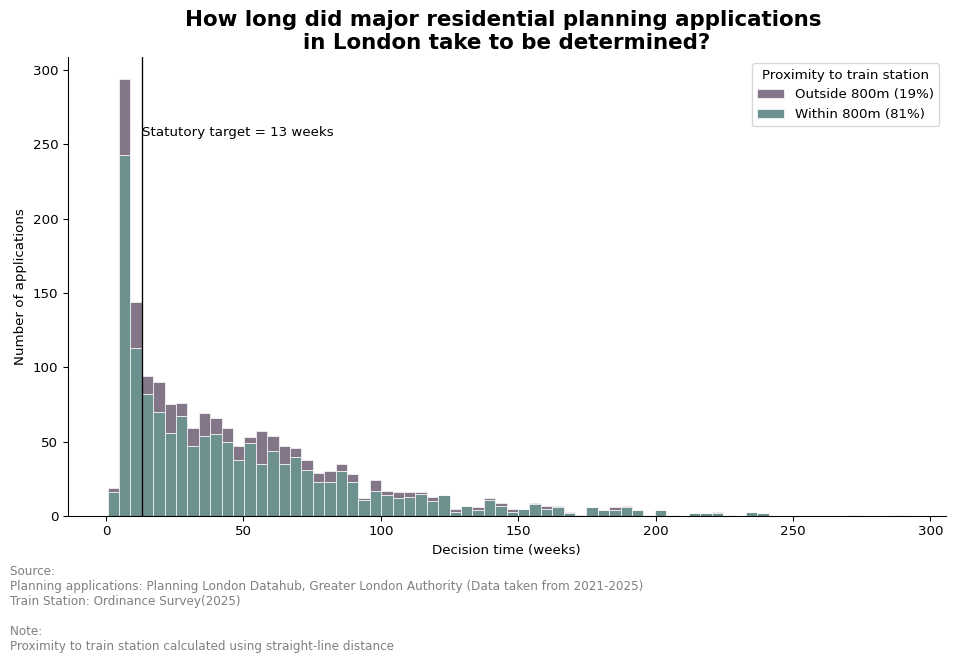
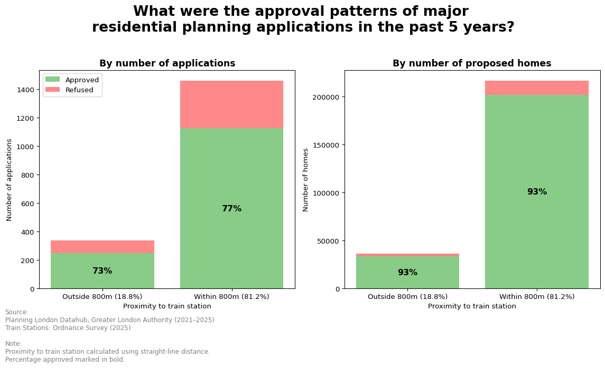
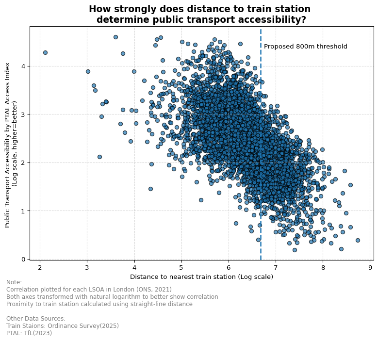
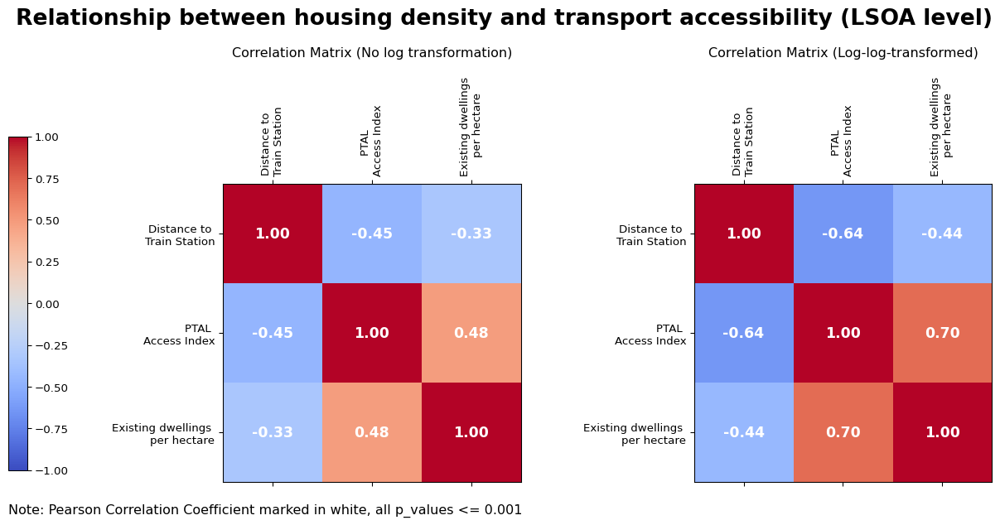
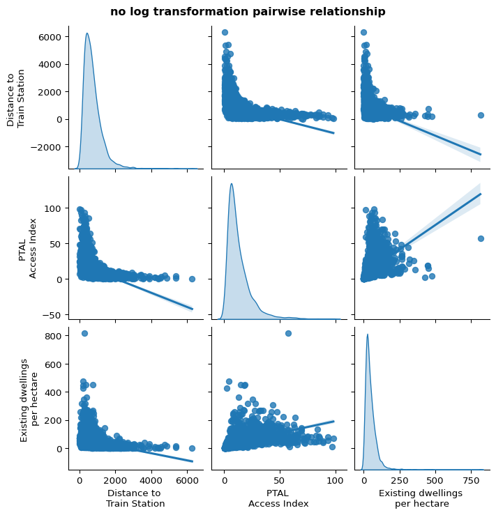

Next Stop: Homes?
Is the Government’s Push for a “Default Yes” for Housebuilding Close to Train Stations a Good Idea?
Planning Opinions
London has again fallen short of its housing targets. The first 9 months of 2025 saw only around 3,000 units of private housing being started, well behind the Mayor’s target of 52,000 new homes per year. The government has already tried to remove regulatory barriers to speed up housing supply, by relaxing Greenbelt restrictions for housebuilding and removing dual-aspect requirement for new-built London homes. Now, here is another one: a “default yes” for housebuilding close to train stations.
In the proposed reforms to the National Planning Policy Framework, the government announced their intention to support housing proposals around train stations, with a “default yes” to planning applications within a reasonable walking distance of well-connected stations.
What’s a “reasonable walking distance” has not been explicitly defined, but Matthew Pennycook, the Minister for Housing and Planning, suggested that 800m could be a possibility. For well-connected stations, they have to be served by 4 trains per hour, or 2 trains per hour in any direction, on weekdays1.
These interventions are framed as ways to encourage building right homes in the right places, and to “get Britain building” by lowering time and financial costs for developers in the lengthy planning application processes.
A dive into the planning applications database revealed that in the past 5 years, only 25% of the major residential applications2 were decided within the statutory time limit of 13 weeks.
Considerable attention should be given to the 800m radius, as 81% of the major residential applications were located within 800m from a train station. Based on historical trends, setting the boundary at 800m means that a significant proportion of major housing schemes can be going through the default approval route in the future, without considering extra stimulation effects brought by the new policy.
Assuming wildly that decision time can be cut by 25% for all those on the default route, this could translate into a rough total per-year saving of 68 years from the time taken to get planning decisions in London. Obviously, this would depend on the complexity of the conditions to be fulfilled by the developer in order to convert a “default yes” into an “actual yes”.

While it seems like there is a considerable potential for speeding up housebuilding brought by the “default yes”, it does not appear like the planning system has been blocking new housing in London, seeing that only 7% of the proposed homes were given red light eventually. Contrary to some analysts’ optimism about the development that can be “unlocked” near stations, an additional tilt towards green-lighting housebuilding near stations itself is unlikely to bring substantially more housing, at least not for London, when the vast majority of housing schemes, especially large-scale ones, have already been supported. Instead, a further tilt in the balance might bring worries about quality.
Another caveat is that the 800m buffer seems to be too blunt. Despite strong national and London-wide planning policy support for building in sustainable locations before the “default yes” came out, approval rate did not show significant differences across the 800m boundary. Does the 800m buffer provide a good estimation of whether the location is sustainable?

To answer the question, we can look at the dataset of Public Transport Accessibility Level (PTAL) from TfL, which considers not only distance to public transport but also service frequency, and includes a range of transport options.
Based on this dataset, we can see that between all neighbourhoods in London, public transport accessibility can still vary significantly even with the same distance to a nearest train station, not to mention that within the 800m buffer, there can be variations in accessibility between locations of different distances to stations. A simple 2-categories cut at 800m does not represent accessibility very well.3

When we break approval rates down by PTAL, a clearer pattern emerges: areas with better public transport accessibility tend to see much higher approval rates, except for PTAL 6a. This approach reveals far more nuance than a simple 800-metre rule, and it takes more transport modes and their frequencies into account. Building this into the “default yes” policy would give a more holistic picture.
The government indeed tried to define “well-connected stations” using a single threshold for train frequency. But 2 trains per hour in any direction does not seem too difficult to meet for most of London’s train stations. When we have a handy PTAL dataset for London, why not use it to set more graduated levels of support for housebuilding based on how accessible an area really is—perhaps through the next London Plan? It may be more complex to administer, but it would better ensure right homes in the right places.
Anyways, to help strengthen the emphasis of developing in sustainable locations, I have classified London neighbourhoods into several clusters to close off this week’s Planning Opinions. Clusters are grouped based on existing neighbourhood density, PTAL levels, and distance to train stations. The green areas on the map below highlights opportunity areas for further densification and development, since they have lower existing density, and good public transport accessibility with train stations very nearby. On the list of green areas, we have New Cross, Peckham, Kennington, Clapham, Mile End, Hampstead, Barking, etc.


The “default yes” policy might speed up housing supply, more through time-cost saving rather than through improved chances of approval. While its causes are laudable, its methodology ought to be more refined, and the quality that is sacrificed for speed deserves our attention. Consultation about the new policy is now in progress, and some details are still in the mist. We will wait and see how it goes.
(996 words)
Technical Appendix
The following bits might be a bit harder to read, but if you are interested in diving deeper, this section sets out some further evidence, and evaluates the robustness of the arguments I have made.
Additional Analysis Materials

As shown above, PTAL Access Index demonstrates stronger correlation with existing housing density compared to distance to train stations. Also, depending on whether log-transformed, distance to train stations only explains about 21% to 41% of the variations in transport accessibility.4 These further reinforce the call for taking finer PTAL measures into account, if we are to give the right level of support to housebuilding at the location with the right level of transport sustainability.


Since the datasets have long-tail distributions, they were log-transformed in the main article’s scatter plot to better uncover and visualise the correlation.
Dealing with the planning applications database – behind the scenes
Major planning applications were queried from the Planning London Datahub5 by connecting to its public API and writing an Elastic Search Query to filter for applications with valid dates from 2021 to 2025 and with 10 or more proposed residential units. 2,215 records were initially obtained. In the data cleaning process, I first inspected the decisions field, and removed 204 records that do not have a definite decision (for example, being shown as undetermined, referred to higher-level government, etc.). I grouped other decision values to either “approved” or “refused” using my understanding of the planning system. I then removed another 212 records that do not have valid coordinate locations.
Despite their regular checking, the GLA cannot guarantee data accuracy as the data were submitted to the GLA by independent boroughs. If there are many missing values in the proposed number of dwellings field of the database, the dataset I started with can be largely incomplete. To sense-check that the number of applications fetched is a good approximation of the actual number of major residential applications in London, I compared it against the number of major residential applications decided in a London borough per year. For example, this figure would be around 15 for LB Ealing on average. Multiplying 15 by 32 boroughs and then by 5 years, we get 2400 applications, roughly near the number of 2,215.
Clustering – behind the scenes
K-means clustering was used to group Lower Layer Super Output Areas (LSOAs) in London into clusters based on the 3 following variables, all of which display strong positive spatial autocorrelation seen from the Moran’s I values. This resulted in geographically coherent clusters even when I did not impose spatial constraints to the clustering.
| Moran's I | P-value | |
|---|---|---|
| Variable | ||
| PTAL Access Index | 0.836437 | 0.001 |
| Distance to Train Station | 0.757858 | 0.001 |
| Existing dwellings per hectare | 0.500683 | 0.001 |

Purely based on the Elbow plot, 6 clusters appears to be a good balance between minimising inertia and retaining interpretability. However, to better pick up nuances and allow for opportunity areas for further densification to be identified, I chose to have 7 clusters instead.
Limitations of raw data
Other than the data quality issue of missing entries, the planning applications database also has another inherent weakness: the same scheme can sometimes have more than one associated application. It can get refused at first, be revised and approved after re-submission. The data also contains some applications made to vary existing applications. Therefore, some cases can be over-represented in the database, affecting the estimation of decision times and approval rates. My analysis results should not be used to measure housing delivery, for the reasons above, as well as that having a permission does not mean the developer would necessarily start construction.
Moreover, the PTAL dataset does not account for travel destinations available at each location. It equally does not reflect service quality.
Limitations of my methodology
The 800m buffer was set on the basis of Euclidean distance throughout the analysis, since the future detailed policies may also adopt an Euclidean approach for easy administration. A buffer based on travel time mapping, however, will provide a more accurate reflection of the actual walkable route from the train station.
In the clustering, I used dwellings per hectare to identify where to densify. Yet, dwelling density is only a proxy of building density6. In office-predominant areas further densification is difficult, but they could be highlighted as opportunity areas in the map. Also, the map only provides broad-stroke opportunity areas for high-level strategic planning. It has not been overlayed with actual site constraints/planning designations preventing development.
Limitations of my arguments
Building more in accessible places, no matter through considering PTAL as I argue for, or through setting a train frequency threshold that the government proposes, grounds on the assumption that transport infrastructure remains static during development. Yet, in reality, train companies might, subject to technical feasibility, increase train frequency when a batch of new residents move in around the station. New stations can also be built in strategic growth areas. This reflects a classic chicken-egg dilemma between housing and infrastructure. My data analysis still sits within the frame of developing in transit-oriented locations, but the alternative frame of developing a location to make it transit-oriented is also valid to an extent.
Further research area
Since the government also proposed that residential applications around train stations would be refused if they do not reach at least 40-50 dwellings per hectare in the net developable area of the site, it will be equally interesting to investigate how many past major residential applications in London have already met this threshold. I have faced significant difficulty in trying to clean up the site area field from the applications database as its values have mixed units in either m2 or hectares, so I did not go down this route. However, this remains an interesting possibility for further research.
Full reproducible code
The reproducible .qmd file used to generate this analysis piece can be found on my GitHub by clicking here.
(999 words)
Footnotes
There is an additional criterion of being located in a top 60 Travel to Work Area by Gross Value Added, but London surely meets the requirement.↩︎
Defined as applications with 10 or more dwellings proposed↩︎
See appendix for more details↩︎
Figures are obtained through getting R-squared by squaring Pearson Correlation Coefficient↩︎
Dataset by the GLA↩︎
Measured in floor-area-ratio (FAR)↩︎